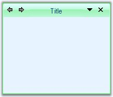

This section covers the features of XPTaskPane control.
· Complete design time support - XPTaskPane allows the user to easily design the XPTaskPages and browse using a drop-down menu and the arrow button in task pane's header portion.
· Customizable user interface properties - XPTaskPane creates child controls representing the different segments of the XPTaskPane and also exposes them in the designer to let users customize it.
· Add / Remove pages - XPTaskPages can be added or removed either through verbs or through TaskPages property settings.
· Navigation - XPTaskPane allows the user to navigate through pages at design-time by selecting Previous page and Next page verbs or using arrow keys in the XP TaskPage Collection Editor.
· Page Sequencing - XPTaskPane allows the user to reorder the pages through 'Bring to front' and 'Send to back' verbs or by using XP TaskPage Collection Editor.
· Visual styles - XPTaskPane supports visual styles Office XP and Office 2007 with all three color schemes that defines the look and feel of the application.
· Custom Colors can be applied for XPTaskPane control. See Visual Styles topic.

Figure 1241: Custom Color applied to XPTaskPane